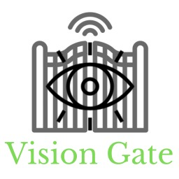
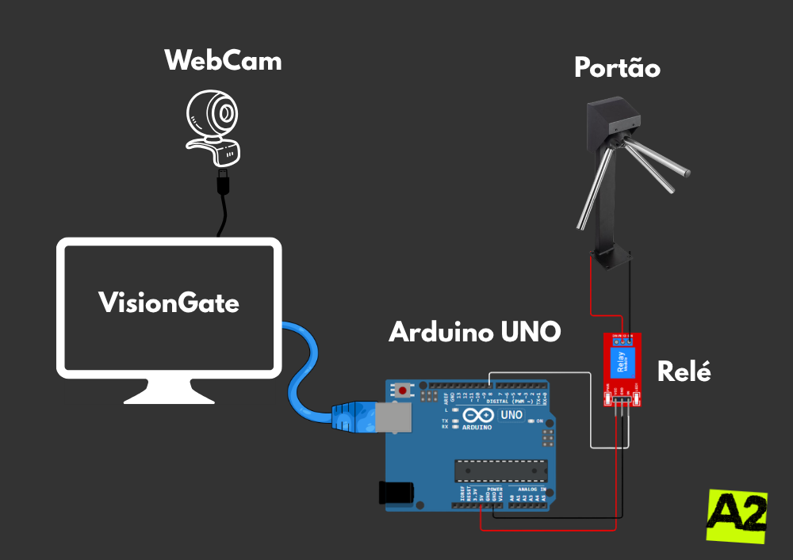
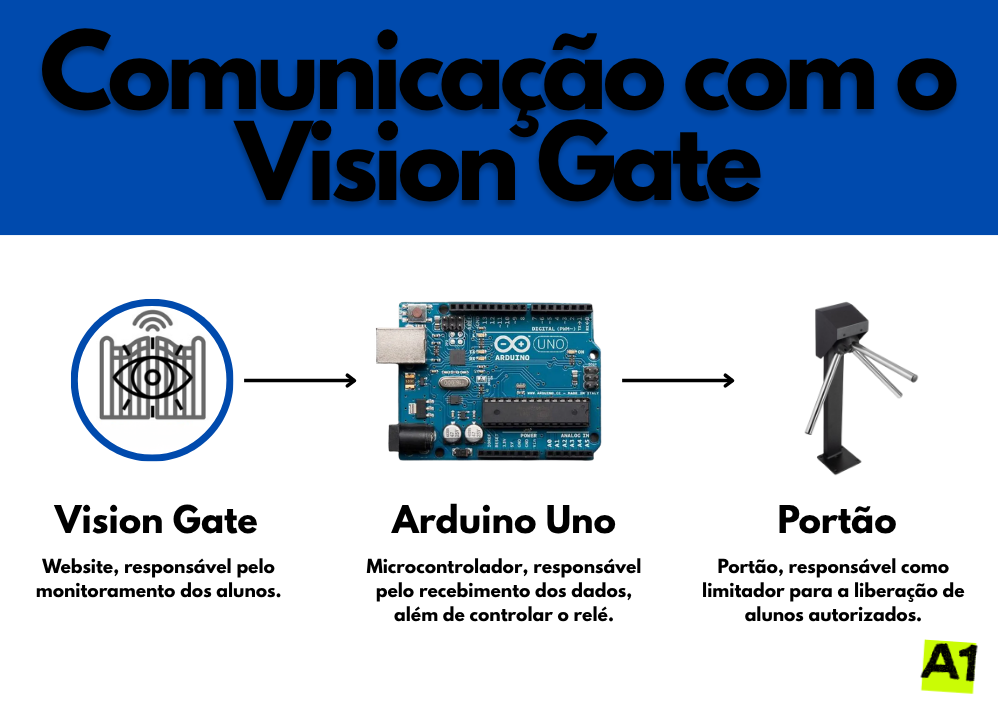

Sistema IoT e de Visão Computacional que monitora o fluxo de alunos na portaria e automatiza o registro de presença e atrasos na secretaria escolar — de forma automática.
O VisionGate integra automação e gestão escolar por meio de um sistema IoT (FastAPI + ESP32) que monitora a portaria e os pontos de acesso ao mesmo tempo. Os dados dos leitores e módulos são enviados para uma API REST própria e exibidos em um Site web feito em HTML, CSS e JavaScript puro.
Além do monitoramento, o sistema gerencia o reaproveitamento do tempo de registro de alunos atrasados para otimizar as rotinas da secretaria de forma eficiente e automatizada — fechando o ciclo entre a chegada do estudante, o processamento de dados e a notificação em tempo real.
clique em um diagrama pra ampliar


Leitura facial, biometria e status da catraca — na portaria principal e entradas secundárias.
Lê os dados periféricos de hardware e controla o acionamento físico do portão ou sinalizador.
O backend em Python com banco SQL guarda as leituras mais recentes de cada zona, em tempo real.
Os dados processados são direcionados automaticamente para o painel de monitoramento da secretaria.
o VisionGate em funcionamento
Construiu o site ao lado do Kayke e gerenciou a automação com Arduino.
Construiu o site do projeto ao lado do Rafael.
Responsável pelo design do projeto.